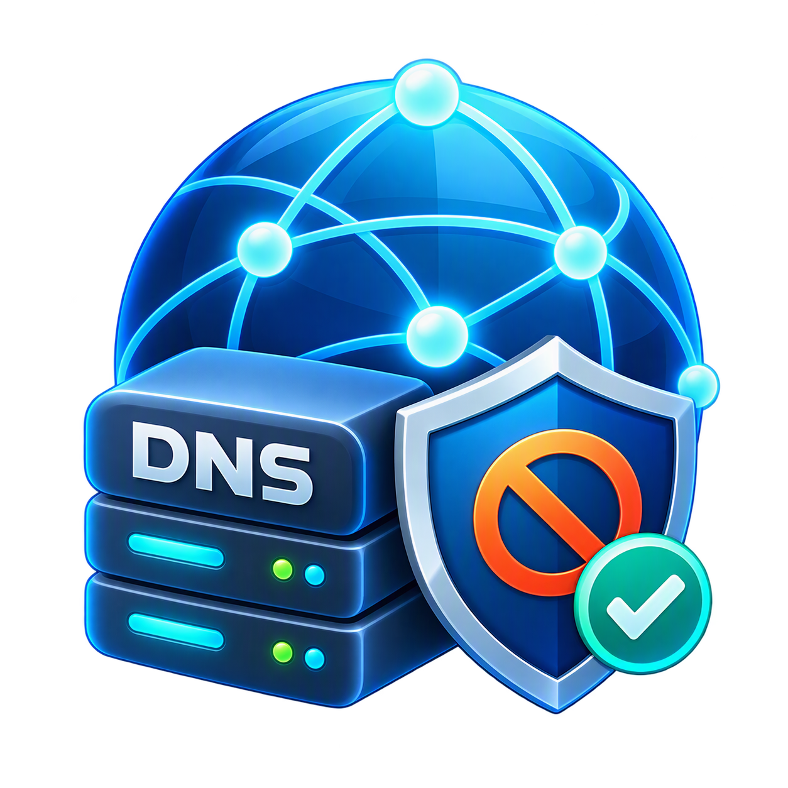

LAN内の機器スキャンから、広告・マルウェアのローカルDNSブロック、
カスタムブラックリスト、テキスト共有までこれ一台で完結。
ボタン一つでネットワーク内の機器を検知し、メーカー名やIP・MACアドレスを一覧表示。カスタムホスト名（例: nas01.home）を自由に設定できます。
StevenBlack等の広告ブロックリストやJPCERT等の最新インテリジェンスを統合。不審なデータ送信やトラッキングをブラックホール（0.0.0.0）へ遮断します。
「🛡️ BL編集」ボタンから `custom_blacklist.txt` をワンタッチで編集。個別にブロックしたいドメインを自由に追加して完全遮断できます。
外部クラウドへデータを送信せず、すべて手元の環境（ローカル）でDNSクエリのフィルタリングとログ記録を行うため、情報漏洩の心配がありません。
誰が・どこにアクセスしたかのDNSクエリログを自動保存（最大1000件のFIFO）。「📝 ログを開く」ボタンでいつでもすぐに確認できます。
ポート8095の簡易HTTPサーバーを標準搭載。IPアドレス経由でLAN内の他端末とも手軽にテキストやURLを共有できます。
ダウンロードした ZIP ファイルを任意のフォルダに解凍します。
フォルダ内の `HDNS-FGX.exe` を右クリックし、「管理者として実行」で起動してください。（※ポート53番を使用するため管理者権限が必要です）
1. 上部ボタンで「ローカルDNS起動」を行います。
2. 続いて「ローカルDNSを適用」をクリックすると、優先DNSが `127.0.0.1` に切り替わりブロックが有効になります。
「ネットワークをスキャン」でLAN内機器を一覧化
必要に応じてデバイスに分かりやすいカスタムホスト名を設定
広告ブロックやセキュリティフィルターの有効化・遮断モード選択
「🛡️ BL編集」から独自のドメインをブラックリストに追加
「テキスト共有」を活用してLAN内の他端末と素早く情報交換
A. 他の常駐ソフト（DNSルーターや仮想化ソフト等）がポート53を占有しているか、アプリを「管理者として実行」していない場合に発生します。管理者権限で起動し直してください。
A. `custom_blacklist.txt` を編集・保存した後は、メモリ上の設定を再読み込みさせるため、アプリの「ローカルDNS停止」→「ローカルDNS起動」の再起動を行ってください。
A. 個人開発の未署名ファイルのため表示される場合があります。「詳細情報」をクリックし、「実行」を選択していただくことで正常に起動します。
本ソフトウェア（HDNS-FGX）はフリーウェアです。個人利用・商用利用を問わず、どなたでも無料でお使いいただけます。
本ソフトウェアの利用によって生じたいかなる損害・トラブルについても、作者は一切の責任を負いかねます。ご利用にあたっては、ご自身の責任において行ってください。